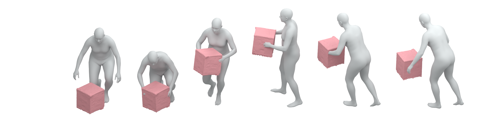
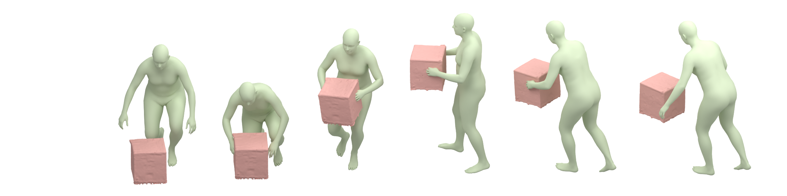
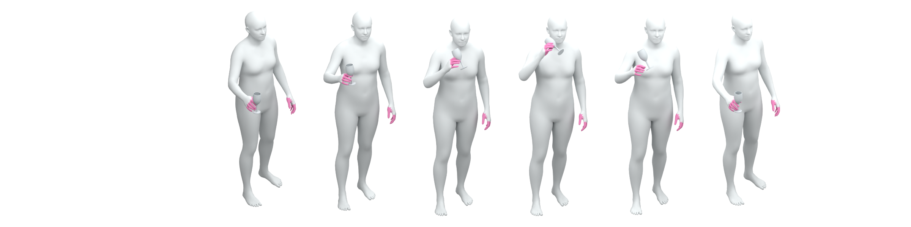
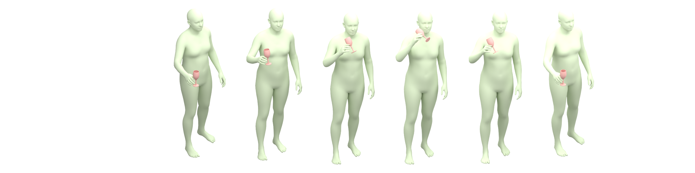
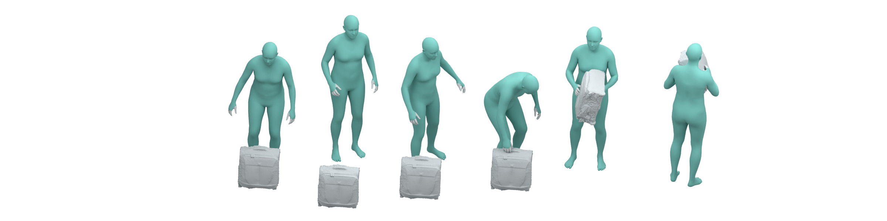
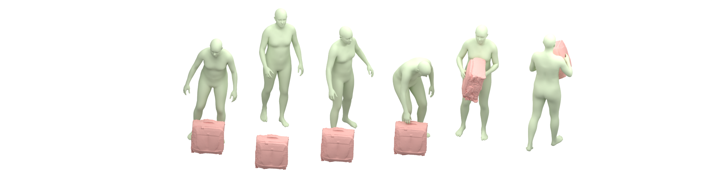
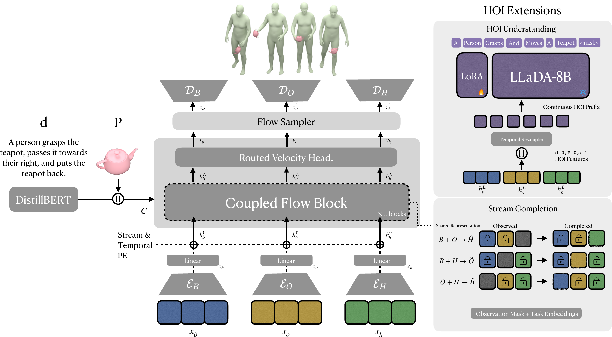
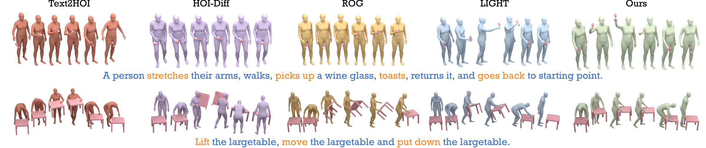

A person picks up a wineglass with their right hand, gives it a slight shake, drinks, then puts it down.
Harnessing Coupled Stream Completion for Human–Object Interaction Modeling
1 School of Artificial Intelligence and Data Science
University of Science and Technology of China, Hefei, China
2 Suzhou Institute for Advanced Research
University of Science and Technology of China, Suzhou, China
{guand3841, di.yang, wangjiangtao}@ustc.edu.cn
A person lifts a camera with both hands, takes a picture forward, then puts it down.
A person walks to a flute, grasps it with their right hand, puts it to their mouth and plays it with both hands, then puts it down with their right have and walks back again.
Pick up the fallen tripod.
Lift the suitcase, move the suitcase, and put down the suitcase.
Lift the monitor, move the monitor, and put down the monitor.
Lift the largetable, move the largetable and put down the largetable.
Lift the smalltable above your head, spin it and put the smalltable down.
Object completion

Ground truth

Hand completion

Ground truth

Body completion

Ground truth

Lift the plasticbox, rotate the plasticbox, and set it back down.
Pull the floorlamp, and set it back down.
Put the tripod horizontally down, then pick up the fallen tripod.
Abstract
Text-conditioned Human-Object Interaction Generation requires synthesizing body motion, object trajectories, and detailed hand articulation. These components differ in scale and dynamics, yet must remain coordinated in contact, relative pose, and interaction timing. Existing methods often use shared generation, which may weaken each stream’s structure, or independent paths, which cannot respond to other streams as they evolve. Latent regression cannot directly constrain interaction geometry after decoding. We propose TRACE, a structured continuous latent framework that separates stream states while coupling their dynamics. TRACE encodes the three streams into separate latents, predicts their velocities from the complete HOI state through a coupled flow, and applies geometric constraints to decoded motion. The same representation supports completion of any one missing stream. Frozen flow features are further connected to a language model for HOI understanding. Experiments across InterAct, OMOMO, and BEHAVE show enhancement from completion tasks, better understanding than encoding raw motion, and stronger interaction consistency on InterAct.
Method


A split temporal VAE (Kingma & Welling, 2013) maps body, object, and hand motion into separate, temporally aligned latents, preserving the structure of each stream while reducing sequence length. A coupled latent flow (Lipman et al., 2023; Liu et al., 2023) predicts each velocity from the joint state, using joint attention for information exchange and separate projections for stream outputs. The clean latent estimates are decoded through the frozen VAE, where constraints on decoded motion supervise contact, anchoring in the object frame, and interaction timing. Text-to-HOI and three single-missing-stream completion tasks share the coupled-flow backbone, with observed streams treated as fixed conditions. For HOI understanding, frozen flow states are bridged to a language model as continuous memory tokens, reusing interaction features learned through generation without modifying the generator.
Qualitative Results


BibTeX
@misc{guan2026harnessingcoupledstreamcompletion,
title={Harnessing Coupled Stream Completion For Human-Object Ineraction Modeling},
author={Dawei Guan and Di Yang and Jiangtao Wang},
year={2026},
eprint={2609.32551},
archivePrefix={arXiv},
primaryClass={cs.CV},
url={https://arxiv.org/abs/2609.32551}
}